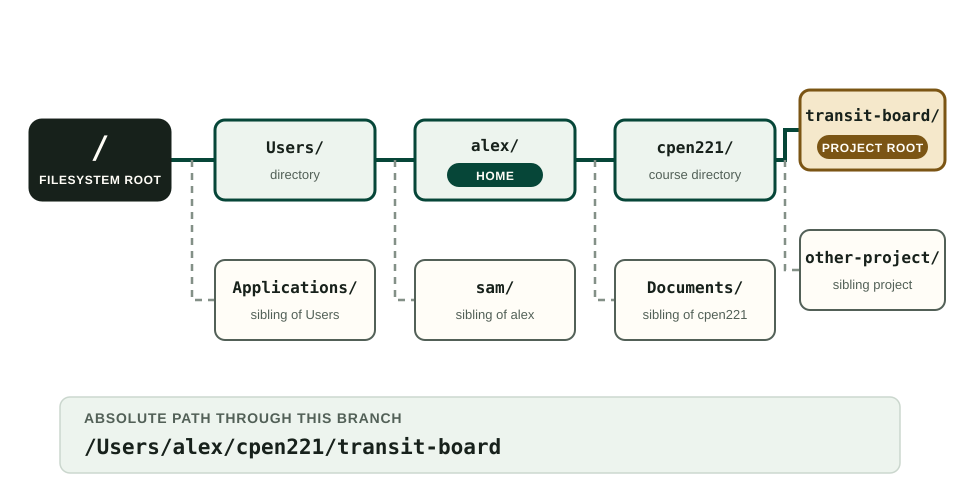
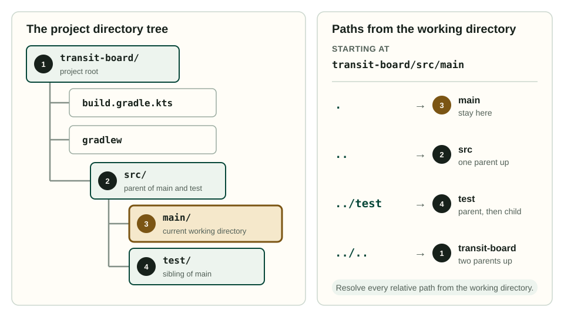

Preparation guide 2 of 5
Using the Command Line Interface
Navigate a project, read paths and commands, operate on files carefully, and preserve useful diagnostic output.
The command line interface gives you a textual way to navigate the filesystem and run programs. Course instructions use it for Java, Gradle, and Git because a written command states which program to run and which arguments to pass.
Learning outcomes
- identify the shell, prompt, command, arguments, and working directory;
- distinguish the filesystem root, home directory, and project root, and describe parent, child, sibling, and descendant relationships;
- navigate a project using absolute and relative paths;
- inspect and perform basic file operations without losing track of their effects;
- run a program or Gradle wrapper from the project root; and
- preserve complete command output when diagnosing a failure.
2.1Terminal, Shell, and Prompt
A terminal is the window or panel that displays text input and output. A shell is the program inside it that reads commands. macOS commonly uses Zsh, Linux commonly uses Bash, and Windows commonly uses PowerShell. Git for Windows also supplies Git Bash.
VS Code's integrated terminal runs one of these real shells. Open it with Terminal → New Terminal. It normally starts in the folder open in VS Code.
A shell displays a prompt when it is ready. Prompts vary:
alex@laptop transit-board %
PS C:\Users\alex\transit-board>Instructions often show a leading $ or > to represent that prompt:
$ git statusType only git status. The prompt is not part of the command.
Commands consist of a program name followed by arguments:
git status --shortHere git is the program. status selects an operation and --short requests a compact display. Spaces separate arguments. The shell then finds git using PATH, starts it in the current working directory, and prints its output.
2.2How the Filesystem Is Organized
Before javac can compile TransitBoard.java, it must locate that file among the files available to the computer. The filesystem organizes files and directories as a hierarchy. A directory is what graphical interfaces usually call a folder. It contains named entries for files and other directories. A file holds data; a directory establishes part of the route used to reach that data. Except for the root, every directory has a parent. A directory can have many children, and two entries in the same directory cannot have the same name.
In the tree below, transit-board contains three files and a directory named src; src contains main and test.
transit-board/
├── build.gradle.kts
├── gradlew
├── gradlew.bat
└── src/
├── main/
│ └── java/
│ └── TransitBoard.java
└── test/
└── java/
└── TransitBoardTest.javaThe terminology describes relationships within this tree:
srcis a child oftransit-board, andtransit-boardis the parent ofsrc;mainandtestare siblings because they have the same parent; andTransitBoard.javais a descendant oftransit-board, even though it is not an immediate child.
Every filesystem has a root directory at the top of its hierarchy. macOS and Linux write that root as /. Windows has a root for each drive, such as C:\. Your home directory is a directory assigned to your user account; it is not the filesystem root. POSIX shells and PowerShell both accept ~ as a convenient way to name the current user's home directory in interactive commands.
A course repository also has a project root. This is the top-level directory of that particular project, usually the directory containing .git, the Gradle build files, and the wrapper scripts. The filesystem root, home directory, and project root are three different locations.
One branch of a macOS filesystem shows these locations in a single hierarchy (Figure 1). The solid line is the route from the filesystem root to one course project; the dashed lines lead to siblings that share a parent. Linux commonly replaces /Users/alex with /home/alex. Windows has the same parent-and-child relationships, although the branch usually begins at a drive root such as C:\.

A file browser presents this same hierarchy with expandable folders. The command line uses paths instead. Understanding the hierarchy matters because a path is interpreted from a particular starting location.
2.3Know Where You Are
We will use this project tree:
transit-board/
├── build.gradle.kts
├── gradlew
├── gradlew.bat
├── settings.gradle.kts
└── src/
├── main/java/TransitBoard.java
└── test/java/TransitBoardTest.javaOn macOS, Linux, or Git Bash:
pwd
lsIn PowerShell:
Get-Location
Get-ChildItempwd prints the working directory. ls lists its contents. PowerShell accepts pwd and ls as interactive aliases, but its full command names make scripts clearer.
The wrapper command works only if the listing includes gradlew or gradlew.bat. If the listing shows a directory named transit-board instead, move into it:
cd transit-boardThen list again. Checking after navigation is quick and prevents a long chain of commands from operating in the wrong place.
2.4Read Paths
A path identifies a location in the filesystem. An absolute path begins from a filesystem root:
/Users/alex/cpen221/transit-board macOS
/home/alex/cpen221/transit-board Linux
C:\Users\alex\cpen221\transit-board WindowsA relative path begins from the current directory. These names have special meanings:
.is the current directory;..is its parent directory;~names your home directory in the shells used in this guide;src/maindescends through two child directories; and../other-projectgoes to the parent, then into a sibling.
The shell resolves a relative path one component at a time. It starts at the working directory, follows .. to a parent or a directory name to a child, and stops with an error if the requested entry does not exist. A relative path therefore has no definite destination unless you also know the working directory.
Suppose the current directory is transit-board/src/main. cd ../.. returns to transit-board. cd / does not: it jumps to the filesystem root. Several paths that begin at main show how the starting location determines the result (Figure 2).

main, . stays in place, .. selects its parent src, ../test selects its sibling, and ../.. reaches the project root.On macOS and Linux, a path beginning with / is absolute. On Windows, a drive letter and backslash commonly begin an absolute path. Both Git Bash and many Java tools display Windows paths using forward slashes. Read the shell's convention rather than mixing syntaxes within one command.
Quote a path containing spaces:
cd "CPEN 221/transit-board"Tab completion is safer than typing a long path. Enter a few characters and press Tab. The shell completes an unambiguous name or offers choices.
Names are case-sensitive on most Linux filesystems. On common macOS and Windows installations they are often case-insensitive, although that is a filesystem configuration rather than a Java rule. Use the spelling stored in the project so that commands also work on a case-sensitive system.
Before running a project command, establish the working directory and verify it.
2.5Inspect Before You Change
The following table uses POSIX commands, which work in macOS, Linux, and Git Bash, and gives the corresponding PowerShell command.
| Purpose | macOS/Linux/Git Bash | PowerShell |
|---|---|---|
| Print working directory | pwd |
Get-Location |
| List files | ls |
Get-ChildItem |
| Include hidden files | ls -la |
Get-ChildItem -Force |
| Change directory | cd path |
Set-Location path |
| Create a directory | mkdir notes |
New-Item -ItemType Directory notes |
| Copy a file | cp a.txt b.txt |
Copy-Item a.txt b.txt |
| Move or rename | mv old.txt new.txt |
Move-Item old.txt new.txt |
| Remove one file | rm draft.txt |
Remove-Item draft.txt |
| Display a short text file | cat README.md |
Get-Content README.md |
Before a copy, move, or removal, use pwd and ls to resolve both source and destination. Shell removal normally bypasses a graphical trash folder. This guide therefore does not ask you to use recursive deletion. Generated Gradle files should be removed with ./gradlew clean, which has a narrowly defined target.
Wildcards such as *.java are expanded by many shells. They are convenient, but they can select more files than you intended. Inspect the matching names before using a wildcard in a command that modifies or removes files.
2.6Run Programs from the Project Root
In macOS, Linux, or Git Bash, ./ explicitly names a program in the current directory:
./gradlew testThe shell does not usually search the current directory for security reasons, so gradlew test may fail even when gradlew is visible in ls.
PowerShell runs the Windows script with:
.\gradlew.bat testIn both cases, test is an argument passed to the wrapper. The wrapper launches the project's pinned Gradle version, which reads the build files and runs the test task.
The same principle applies to Java's tools:
javac Hello.java
java HelloThe first command compiles source. The second asks the Java launcher to find and run the named class. A Gradle project normally supplies these invocations through its build, so prefer the wrapper command documented by that project.
2.7Read Output as Evidence
A successful command can print nothing, and a failed command can print several screenfuls. The prompt returning only means the process ended. Check the final summary and do not infer success from the presence of some green text near the top.
For a build failure, preserve:
- the command you entered;
- the working directory;
- the first task reported as failed;
- the complete diagnostic, including lines following “Caused by”; and
- any changes made immediately before the failure.
Use the terminal's scrollback or copy the output as text. Screenshots often cut off the command, paths, or final cause. Do not post passwords, access tokens, or private repository URLs containing embedded credentials.
Shells maintain command history. Press Up to recall a command, edit only the needed argument, and run it again. This reduces transcription errors and makes an experiment reproducible.
2.8Stop a Running Program
Some commands keep running: a web server waits for requests, and a program may be stuck in a loop. In a terminal, Ctrl+C usually asks the foreground process to stop. It is not the normal copy shortcut inside many terminals. VS Code uses the platform's terminal copy shortcuts and can copy a selection through its context menu.
If Ctrl+C does not return a prompt, wait for the program's shutdown message and try once more. Closing the entire terminal loses context that might help diagnose the program.
2.9A Navigation Exercise
Create a disposable practice directory somewhere you can identify clearly. Then:
- print the working directory;
- create
cli-practiceand enter it; - create
srcandnotesinside it; - list the resulting tree;
- move from
srcto its siblingnotesusing..; - return to
cli-practice; and - explain, before acting, how you would remove the practice directory safely.
Do not memorize command lists in isolation. For each step, state the location before and after the command. Keep track of where the shell is and what each path will select.
2.10The Terminal and File Browser Use the Same Files
The file explorer and terminal are not separate filesystems. They are two views of the same files. A change made in one should appear in the other after refresh. If it does not, compare their full paths: you probably opened two similarly named directories or two copies of the repository.
Changing directory does not move any files. It changes the location that the shell uses to interpret relative paths for subsequent commands. A second terminal can have a different working directory at the same time because each shell keeps its own location.
2.11Summary
The terminal hosts a shell, and the shell runs a command in a working directory. Paths may be absolute or relative; ., .., quoting, and tab completion make relative navigation reliable. Inspect before modifying files, run the Gradle wrapper from the project root, and preserve complete commands and output as diagnostic evidence.